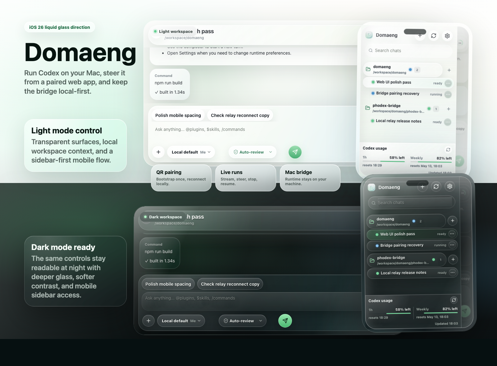
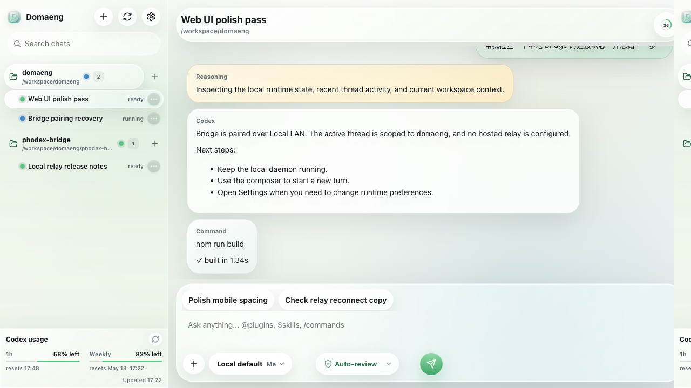
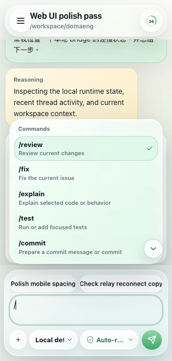
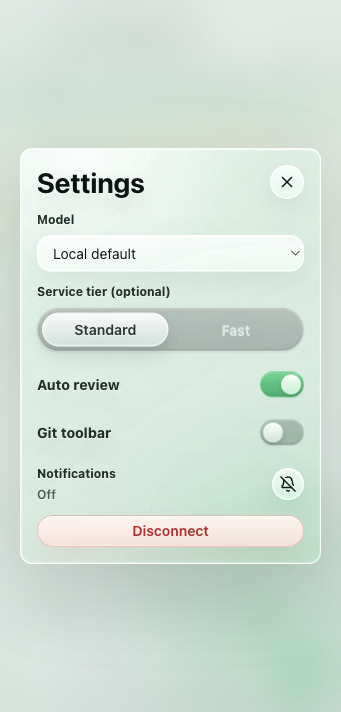
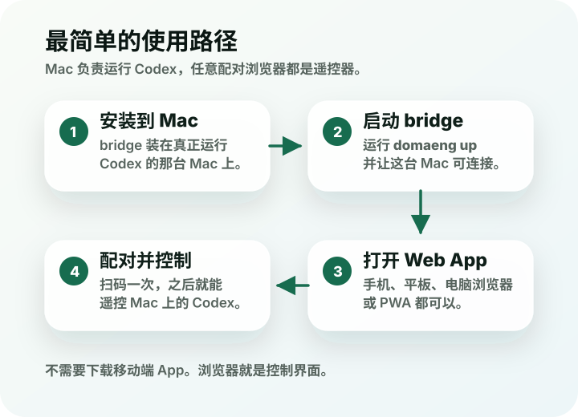
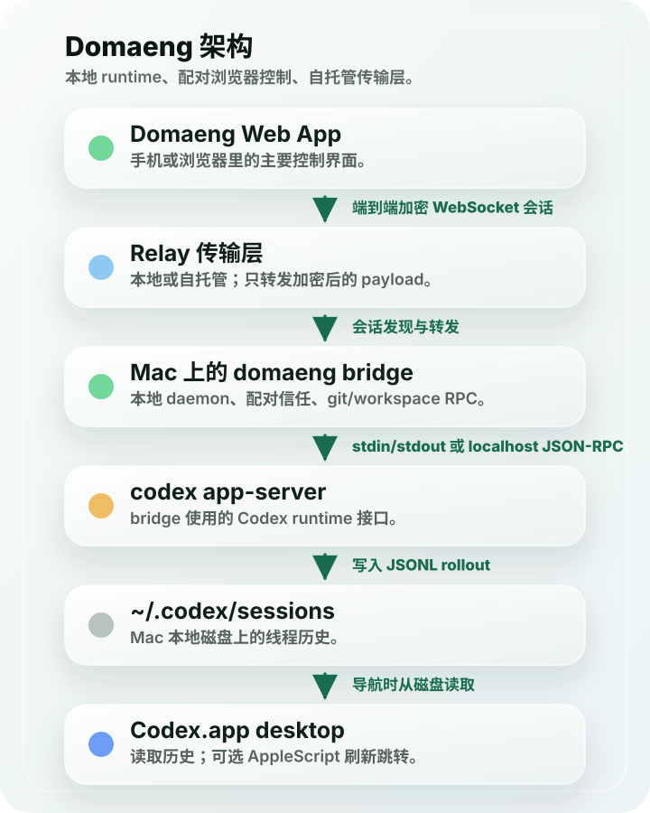

为什么需要它
把本地 Codex 变成跨设备工作台
Domaeng 面向已经在 Mac 上使用 Codex 的用户：你可以离开键盘，在 iPhone、iPad、另一台电脑或同一台 Mac 的浏览器里继续看输出、补充方向、停止运行、管理线程和触发本地 git 操作。
核心体验
远程控制，但不是远程托管
Web App 展示实时输出、线程、项目上下文、模式切换、图片附件和本地操作。你的浏览器发送指令， bridge 在 Mac 上完成真正的 Codex 和 workspace 工作。
实时 streaming 输出
运行中追加 prompt
Stop / resume 线程
图片附件输入
浏览器通知
本地 git 操作



Mac-hosted Codex
Codex、shell、git 和本地文件系统都在 Mac 上执行，浏览器不接管你的开发环境。
一次配对，后续重连
通过 QR 或配对码完成首次信任，之后 bridge 可达时可以回到同一台 trusted Mac。
运行中继续引导
在 turn 还没结束时排队下一条 prompt，或者直接 stop 当前 run，让控制感留在你手里。
项目和线程上下文
按本地项目和 thread 工作，不把不同 repo 的上下文混在一起，也不用在侧栏按 repo 过滤。
自托管 relay
relay 只是传输层。你可以用本地 LAN、Tailscale、反向代理或自己的 VPS。
开源友好
公开源码保持 local-first 和通用配置，不把私有托管服务写进默认运行路径。
工作方式
从安装到控制，只需要一条本地路径
在 Mac 上启动 bridge，打开 relay 提供的 Web App，扫码或输入配对码。之后浏览器和 Mac bridge 通过加密应用流量交换指令与输出。

Local-first 架构
relay 负责传输，Mac 负责真正的工作
这种边界让 Domaeng 适合开源和自托管：relay 不执行 git 命令，也不应该接收仓库凭据； 它只帮助浏览器找到并安全连接到你的 Mac bridge。

开始使用
在负责 host Codex 的 Mac 上运行
npm package 会带上 bridge、本地 relay 和 Web App assets。另一台设备打开打印出来的 `/app/` URL 后， 扫 QR 或输入配对码即可连接。
npm install -g domaeng@latest
domaeng up